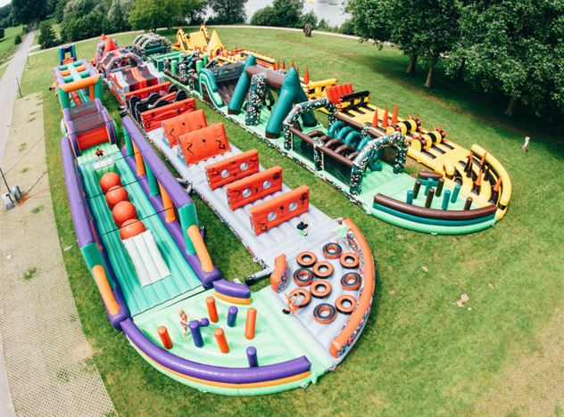

Hoppborgsvik!
Hoppborgsvik är ett hoppborgsland som finns i många delar av Sverige.
Här finns det någonting för alla åldrar. Det finns allt från hoppborgar till vattenrutchbanor!
Filmen här nedan är ett filmklipp från Hoppborgsvik i Falun där man kan hyra hoppborgar.😁
I Hoppborgsvik i Uppsala finns både hoppborgar och vattenrutchbanor
Bilden nedan är från Hoppborgsvik i Örebro där de har massor av hoppborgshinderbanor.
